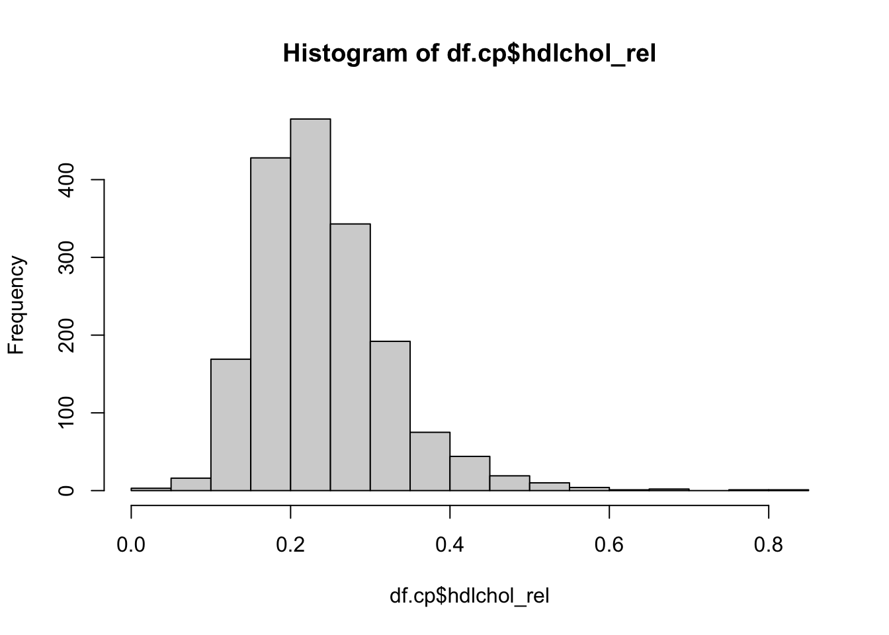
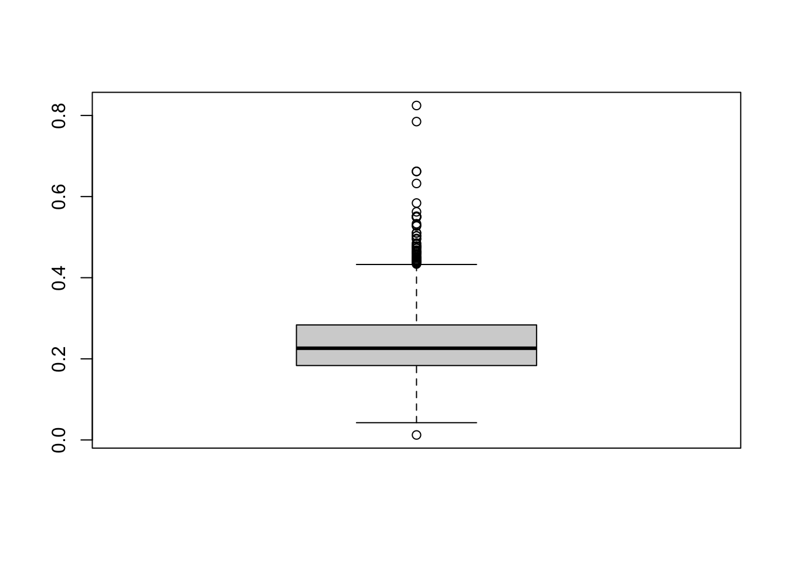
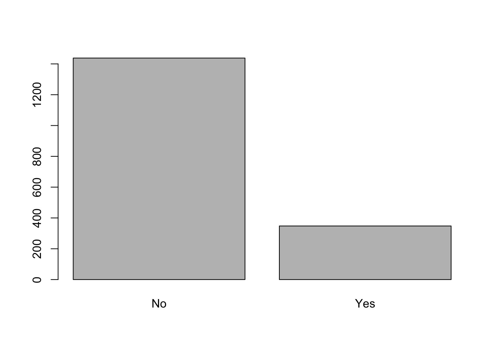

library(rio)
df.cp <- import("../data/caerphilly.csv") # Diese wd() sieht bei dir natürlich anders ausÜbung: Deskriptive Statistik in R
Generelles zu den Übungen
- Niemand kann alle R-Funktionen auswendig. Daher ist es ganz normal, dass man spickt (z.B. R-Cheat Sheet oder in den Skripten zu den Workshops).
- Alle Aufgaben sind mit den Codes aus den R-Workshops lösbar.
- Wenn du eine Aufgabe nicht auf Anhieb lösen kannst, versuche dir zuerst Hilfe im Internet oder den Unterrichtsmaterialen zu holen. Schaue die Lösung erst an, wenn du mit Google und co. wirklich nicht weiter kommst.
- Fragen zu den Übungen bitte im Forum auf Moodle posten und entsprechend verlinken.
1: Datensatz einlesen
Für diese Übung brauchst du wieder die Datei caerphilly.csv, welche du auf Moodle findest. Lade den Datensatz herunter und speichere ihn ab. Definiere danach deine Working directory entsprechend und importiere den Datensatz in R.
Der Datenimport ist am einfachsten mit library(rio). Beachte, dass der Name zwischen den beiden ” ” identisch mit jenem der Datei auf deinem Rechner sein muss. Die Working directory muss natürlich auch korrekt definiert sein.
Folgende Variablen sind im Datensatz enthalten:
mi= Myocardial infarction (0 = No, 1 = Yes)socclass= Soziale Klasse mit den Levels I, II, IIIM, IIINM, IV, Vdiabetes= Diabetes mit den Levels No/uncertain oder Yessmoking= Raucherstatus mit den LevelsNever smoked,Ex 1-4 years,Ex>5 years,<15 per day,>15 per daytotchol= Totales Cholesterinhdlchol= High-Density-Lipoprotein-Cholesterinbmi= Body Mass Indexbmicat= Body Mass Indes mit den Levels Underweight, Normal, Overweight, Obese
2: Datensatz anschauen
- Nutze einen einfachen Befehl um zu kontrollieren, ob die Daten richtig eingelesen wurden.
- Wie viele Zeilen und Spalten hat der Datensatz? Was repräsentieren die Zeilen und die Spalten?
- Schau dir die 6. Zeile des Datensatzes an.
- Schau dir die 5. Spalte des Datensatzes an.
- Schau dir die Variable
totcholan. - Welchen totchol-Wert hat die 12. Person?
- Nutze einen einfachen Befehl, um zu kontrollieren, ob die Daten richtig eingelesen wurden.
Es gibt verschiedene Möglichkeiten, dies zu tun. Du kannst im Global Environment (oben rechts) auf das kleine Tabellensymbol hinter dem neu erstellten Objekt klicken. Dann öffnet sich eine Tabelle und du hast quasi eine Excel-Ansicht. Mit str() siehst du die einzelnen Variablen, die jeweilige Datenklasse sowie die ersten Werte. Mit head() siehst du die ersten 6 Zeilen des Datensatzes.
str(df.cp)'data.frame': 1786 obs. of 9 variables:
$ id : int 1 2 3 4 5 6 7 8 9 10 ...
$ mi : int 0 1 0 1 0 0 1 0 0 0 ...
$ socclass: chr "IIINM" "IV" "II" "IIINM" ...
$ diabetes: chr "No/uncertain" "No/uncertain" "No/uncertain" "No/uncertain" ...
$ smoking : chr " Ex>5 years" ">15 per day" " Ex>5 years" "Never smoked" ...
$ totchol : num 4.98 5.58 6.34 6.8 6.04 5.59 4.83 7.7 6.04 7.08 ...
$ hdlchol : num 1.33 0.99 1.92 1.42 1.16 1.16 1.16 1.5 1.5 1.64 ...
$ bmi : num 29.7 29.4 19.7 30.9 26.2 ...
$ bmicat : chr "Overweight" "Overweight" "Underweight" "Obese" ...head(df.cp) id mi socclass diabetes smoking totchol hdlchol bmi bmicat
1 1 0 IIINM No/uncertain Ex>5 years 4.98 1.33 29.68024 Overweight
2 2 1 IV No/uncertain >15 per day 5.58 0.99 29.36095 Overweight
3 3 0 II No/uncertain Ex>5 years 6.34 1.92 19.73448 Underweight
4 4 1 IIINM No/uncertain Never smoked 6.80 1.42 30.92452 Obese
5 5 0 IIINM No/uncertain >15 per day 6.04 1.16 26.15399 Overweight
6 6 0 IIIM No/uncertain <15 per day 5.59 1.16 24.60821 Normal- Wie viele Zeilen und Spalten hat der Datensatz? Was repräsentieren die Zeilen und die Spalten?
nrow(df.cp)[1] 1786ncol(df.cp)[1] 9Jede Zeile steht für eine Beobachtungseinheit und jede Spalte für eine Variable.
- Schau dir die 6. Zeile des Datensatzes an.
df.cp[6, ] id mi socclass diabetes smoking totchol hdlchol bmi bmicat
6 6 0 IIIM No/uncertain <15 per day 5.59 1.16 24.60821 Normal- Schau dir die 5. Spalte des Datensatzes an.
Da es viele Werte sind, musst du etwas scrollen…
df.cp[ ,5] [1] " Ex>5 years" ">15 per day" " Ex>5 years" "Never smoked"
[5] ">15 per day" "<15 per day" ">15 per day" " Ex>5 years"
[9] "Never smoked" " Ex>5 years" "<15 per day" " Ex>5 years"
[13] ">15 per day" "Never smoked" "Never smoked" " Ex>5 years"
[17] "Ex 1-4 years" "<15 per day" ">15 per day" " Ex>5 years"
[21] "Never smoked" " Ex>5 years" "Never smoked" "Ex 1-4 years"
[25] ">15 per day" "<15 per day" "Never smoked" ">15 per day"
[29] ">15 per day" ">15 per day" "<15 per day" "<15 per day"
[33] " Ex>5 years" "Ex 1-4 years" "<15 per day" "Ex 1-4 years"
[37] ">15 per day" ">15 per day" "Never smoked" ">15 per day"
[41] ">15 per day" "<15 per day" "<15 per day" " Ex>5 years"
[45] " Ex>5 years" ">15 per day" "Never smoked" "<15 per day"
[49] " Ex>5 years" " Ex>5 years" " Ex>5 years" "<15 per day"
[53] " Ex>5 years" ">15 per day" ">15 per day" ">15 per day"
[57] "<15 per day" "Ex 1-4 years" ">15 per day" "Never smoked"
[61] ">15 per day" ">15 per day" ">15 per day" " Ex>5 years"
[65] "Never smoked" ">15 per day" ">15 per day" ">15 per day"
[69] ">15 per day" "Never smoked" " Ex>5 years" ">15 per day"
[73] ">15 per day" "<15 per day" ">15 per day" ">15 per day"
[77] "Ex 1-4 years" "Never smoked" " Ex>5 years" "Ex 1-4 years"
[81] ">15 per day" ">15 per day" "<15 per day" "Never smoked"
[85] " Ex>5 years" " Ex>5 years" " Ex>5 years" "<15 per day"
[89] "<15 per day" "<15 per day" ">15 per day" "Never smoked"
[93] "<15 per day" "Ex 1-4 years" " Ex>5 years" ">15 per day"
[97] "<15 per day" "<15 per day" "<15 per day" ">15 per day"
[101] "<15 per day" " Ex>5 years" "<15 per day" "Ex 1-4 years"
[105] ">15 per day" " Ex>5 years" "<15 per day" "<15 per day"
[109] "<15 per day" ">15 per day" ">15 per day" ">15 per day"
[113] "Ex 1-4 years" " Ex>5 years" "Ex 1-4 years" "<15 per day"
[117] "Ex 1-4 years" ">15 per day" "Ex 1-4 years" "Never smoked"
[121] " Ex>5 years" ">15 per day" ">15 per day" " Ex>5 years"
[125] "<15 per day" ">15 per day" " Ex>5 years" "<15 per day"
[129] "<15 per day" "Never smoked" " Ex>5 years" ">15 per day"
[133] "<15 per day" "Never smoked" "<15 per day" "Ex 1-4 years"
[137] "<15 per day" ">15 per day" " Ex>5 years" "<15 per day"
[141] " Ex>5 years" "Never smoked" " Ex>5 years" " Ex>5 years"
[145] "Never smoked" " Ex>5 years" "Never smoked" "Ex 1-4 years"
[149] "<15 per day" " Ex>5 years" "Ex 1-4 years" ">15 per day"
[153] ">15 per day" "Never smoked" "<15 per day" "<15 per day"
[157] "<15 per day" ">15 per day" "<15 per day" ">15 per day"
[161] "Never smoked" ">15 per day" "<15 per day" ">15 per day"
[165] "<15 per day" "<15 per day" "<15 per day" ">15 per day"
[169] ">15 per day" "<15 per day" ">15 per day" "Ex 1-4 years"
[173] "Never smoked" "<15 per day" "<15 per day" "Never smoked"
[177] " Ex>5 years" "<15 per day" " Ex>5 years" "Never smoked"
[181] "<15 per day" "Never smoked" ">15 per day" " Ex>5 years"
[185] "<15 per day" ">15 per day" "<15 per day" "Never smoked"
[189] "<15 per day" "Ex 1-4 years" ">15 per day" "<15 per day"
[193] "<15 per day" "<15 per day" "Never smoked" ">15 per day"
[197] ">15 per day" ">15 per day" "Never smoked" ">15 per day"
[201] ">15 per day" "Never smoked" ">15 per day" "Never smoked"
[205] "Never smoked" " Ex>5 years" ">15 per day" "<15 per day"
[209] ">15 per day" " Ex>5 years" " Ex>5 years" "<15 per day"
[213] " Ex>5 years" ">15 per day" ">15 per day" "Never smoked"
[217] " Ex>5 years" "Never smoked" " Ex>5 years" ">15 per day"
[221] "<15 per day" " Ex>5 years" " Ex>5 years" "Ex 1-4 years"
[225] "<15 per day" " Ex>5 years" "Never smoked" " Ex>5 years"
[229] ">15 per day" "Never smoked" "<15 per day" "Never smoked"
[233] "Ex 1-4 years" " Ex>5 years" "<15 per day" "Ex 1-4 years"
[237] ">15 per day" ">15 per day" " Ex>5 years" "<15 per day"
[241] "<15 per day" "Never smoked" "<15 per day" "<15 per day"
[245] "<15 per day" ">15 per day" "Never smoked" "Never smoked"
[249] ">15 per day" ">15 per day" "Never smoked" ">15 per day"
[253] "Never smoked" " Ex>5 years" " Ex>5 years" ">15 per day"
[257] ">15 per day" " Ex>5 years" "<15 per day" "Never smoked"
[261] " Ex>5 years" " Ex>5 years" ">15 per day" " Ex>5 years"
[265] ">15 per day" ">15 per day" "<15 per day" "Never smoked"
[269] ">15 per day" " Ex>5 years" "Never smoked" "<15 per day"
[273] " Ex>5 years" " Ex>5 years" ">15 per day" ">15 per day"
[277] "<15 per day" " Ex>5 years" "Ex 1-4 years" ">15 per day"
[281] "<15 per day" " Ex>5 years" "<15 per day" "Never smoked"
[285] "Never smoked" "<15 per day" "Never smoked" "<15 per day"
[289] "<15 per day" ">15 per day" ">15 per day" ">15 per day"
[293] " Ex>5 years" "Never smoked" " Ex>5 years" "<15 per day"
[297] ">15 per day" " Ex>5 years" " Ex>5 years" " Ex>5 years"
[301] " Ex>5 years" ">15 per day" "Ex 1-4 years" " Ex>5 years"
[305] ">15 per day" ">15 per day" "Ex 1-4 years" ">15 per day"
[309] "Never smoked" "Never smoked" "Ex 1-4 years" ">15 per day"
[313] " Ex>5 years" ">15 per day" "<15 per day" ">15 per day"
[317] "<15 per day" "<15 per day" " Ex>5 years" "<15 per day"
[321] "Ex 1-4 years" ">15 per day" "Never smoked" "Ex 1-4 years"
[325] ">15 per day" "<15 per day" ">15 per day" "Ex 1-4 years"
[329] ">15 per day" " Ex>5 years" " Ex>5 years" ">15 per day"
[333] "<15 per day" "<15 per day" "Never smoked" ">15 per day"
[337] ">15 per day" "Never smoked" "<15 per day" ">15 per day"
[341] ">15 per day" " Ex>5 years" ">15 per day" "<15 per day"
[345] "Never smoked" "Never smoked" "<15 per day" " Ex>5 years"
[349] "Ex 1-4 years" " Ex>5 years" ">15 per day" " Ex>5 years"
[353] " Ex>5 years" ">15 per day" ">15 per day" " Ex>5 years"
[357] ">15 per day" ">15 per day" " Ex>5 years" "<15 per day"
[361] ">15 per day" ">15 per day" "Never smoked" ">15 per day"
[365] "<15 per day" "<15 per day" "Never smoked" "Never smoked"
[369] "Never smoked" ">15 per day" ">15 per day" " Ex>5 years"
[373] "Never smoked" ">15 per day" "<15 per day" ">15 per day"
[377] ">15 per day" "<15 per day" "<15 per day" "Ex 1-4 years"
[381] " Ex>5 years" "Never smoked" "<15 per day" " Ex>5 years"
[385] "<15 per day" "Ex 1-4 years" ">15 per day" " Ex>5 years"
[389] " Ex>5 years" "Ex 1-4 years" ">15 per day" ">15 per day"
[393] "Never smoked" ">15 per day" ">15 per day" ">15 per day"
[397] ">15 per day" "Never smoked" "<15 per day" "Ex 1-4 years"
[401] ">15 per day" "<15 per day" "<15 per day" "Never smoked"
[405] "Ex 1-4 years" ">15 per day" ">15 per day" ">15 per day"
[409] "<15 per day" "Never smoked" "Ex 1-4 years" ">15 per day"
[413] " Ex>5 years" " Ex>5 years" ">15 per day" " Ex>5 years"
[417] ">15 per day" "Never smoked" "Ex 1-4 years" " Ex>5 years"
[421] "<15 per day" ">15 per day" "Ex 1-4 years" ">15 per day"
[425] ">15 per day" "Ex 1-4 years" "Never smoked" "<15 per day"
[429] " Ex>5 years" "Never smoked" "Ex 1-4 years" ">15 per day"
[433] "Never smoked" "Ex 1-4 years" " Ex>5 years" "<15 per day"
[437] " Ex>5 years" "<15 per day" "Never smoked" ">15 per day"
[441] "<15 per day" "Never smoked" "Never smoked" ">15 per day"
[445] "<15 per day" "<15 per day" " Ex>5 years" "Ex 1-4 years"
[449] ">15 per day" ">15 per day" ">15 per day" "Ex 1-4 years"
[453] "Never smoked" "<15 per day" "<15 per day" " Ex>5 years"
[457] "<15 per day" "<15 per day" "<15 per day" " Ex>5 years"
[461] "Ex 1-4 years" "Never smoked" ">15 per day" "Never smoked"
[465] " Ex>5 years" "<15 per day" "<15 per day" ">15 per day"
[469] "Never smoked" "<15 per day" "<15 per day" " Ex>5 years"
[473] "Never smoked" "Never smoked" "<15 per day" ">15 per day"
[477] " Ex>5 years" ">15 per day" ">15 per day" ">15 per day"
[481] ">15 per day" " Ex>5 years" ">15 per day" " Ex>5 years"
[485] "Never smoked" " Ex>5 years" " Ex>5 years" "Never smoked"
[489] ">15 per day" ">15 per day" " Ex>5 years" "<15 per day"
[493] "<15 per day" "Ex 1-4 years" "Ex 1-4 years" "<15 per day"
[497] "<15 per day" "Never smoked" ">15 per day" "Never smoked"
[501] ">15 per day" "<15 per day" ">15 per day" "<15 per day"
[505] "Never smoked" "Never smoked" ">15 per day" ">15 per day"
[509] ">15 per day" ">15 per day" ">15 per day" "<15 per day"
[513] "<15 per day" "Never smoked" "<15 per day" " Ex>5 years"
[517] ">15 per day" ">15 per day" ">15 per day" ">15 per day"
[521] " Ex>5 years" "<15 per day" "<15 per day" ">15 per day"
[525] "<15 per day" "Never smoked" "Ex 1-4 years" " Ex>5 years"
[529] "<15 per day" " Ex>5 years" "Never smoked" ">15 per day"
[533] " Ex>5 years" "Ex 1-4 years" " Ex>5 years" "Never smoked"
[537] "<15 per day" ">15 per day" "<15 per day" " Ex>5 years"
[541] "Never smoked" "<15 per day" " Ex>5 years" "Never smoked"
[545] "Never smoked" "Ex 1-4 years" "Never smoked" "<15 per day"
[549] "<15 per day" "<15 per day" ">15 per day" " Ex>5 years"
[553] ">15 per day" "Ex 1-4 years" " Ex>5 years" "<15 per day"
[557] " Ex>5 years" "<15 per day" "Never smoked" ">15 per day"
[561] "<15 per day" " Ex>5 years" ">15 per day" "Never smoked"
[565] "<15 per day" "<15 per day" "Never smoked" "Ex 1-4 years"
[569] "<15 per day" "Ex 1-4 years" "<15 per day" ">15 per day"
[573] "<15 per day" "Never smoked" "Never smoked" ">15 per day"
[577] "<15 per day" " Ex>5 years" ">15 per day" ">15 per day"
[581] "Ex 1-4 years" "Never smoked" "<15 per day" " Ex>5 years"
[585] "Never smoked" " Ex>5 years" ">15 per day" "<15 per day"
[589] "Ex 1-4 years" "<15 per day" "<15 per day" " Ex>5 years"
[593] ">15 per day" " Ex>5 years" "Ex 1-4 years" "<15 per day"
[597] "Ex 1-4 years" "<15 per day" "<15 per day" " Ex>5 years"
[601] ">15 per day" ">15 per day" ">15 per day" "<15 per day"
[605] "<15 per day" "Never smoked" " Ex>5 years" ">15 per day"
[609] "<15 per day" ">15 per day" " Ex>5 years" "<15 per day"
[613] " Ex>5 years" "<15 per day" ">15 per day" ">15 per day"
[617] ">15 per day" " Ex>5 years" ">15 per day" " Ex>5 years"
[621] "Ex 1-4 years" "<15 per day" ">15 per day" ">15 per day"
[625] " Ex>5 years" ">15 per day" "<15 per day" "<15 per day"
[629] " Ex>5 years" ">15 per day" " Ex>5 years" "<15 per day"
[633] "<15 per day" "<15 per day" "Never smoked" ">15 per day"
[637] " Ex>5 years" "Ex 1-4 years" ">15 per day" " Ex>5 years"
[641] ">15 per day" " Ex>5 years" ">15 per day" " Ex>5 years"
[645] ">15 per day" ">15 per day" "Never smoked" " Ex>5 years"
[649] ">15 per day" "<15 per day" "Ex 1-4 years" " Ex>5 years"
[653] "Never smoked" "<15 per day" "Never smoked" ">15 per day"
[657] " Ex>5 years" " Ex>5 years" ">15 per day" ">15 per day"
[661] " Ex>5 years" ">15 per day" "Ex 1-4 years" "<15 per day"
[665] ">15 per day" ">15 per day" " Ex>5 years" ">15 per day"
[669] "<15 per day" " Ex>5 years" ">15 per day" " Ex>5 years"
[673] "<15 per day" "Never smoked" "<15 per day" ">15 per day"
[677] ">15 per day" "Ex 1-4 years" "<15 per day" "Never smoked"
[681] "<15 per day" " Ex>5 years" ">15 per day" "Never smoked"
[685] "<15 per day" "<15 per day" "Ex 1-4 years" "Ex 1-4 years"
[689] " Ex>5 years" "Never smoked" "Ex 1-4 years" "Never smoked"
[693] "<15 per day" "Ex 1-4 years" "Never smoked" "<15 per day"
[697] "<15 per day" "<15 per day" " Ex>5 years" ">15 per day"
[701] " Ex>5 years" "Never smoked" ">15 per day" "<15 per day"
[705] " Ex>5 years" ">15 per day" ">15 per day" "<15 per day"
[709] "Ex 1-4 years" ">15 per day" " Ex>5 years" "<15 per day"
[713] "<15 per day" " Ex>5 years" ">15 per day" "<15 per day"
[717] ">15 per day" "Ex 1-4 years" ">15 per day" ">15 per day"
[721] ">15 per day" "Never smoked" "Never smoked" ">15 per day"
[725] ">15 per day" ">15 per day" "<15 per day" "Never smoked"
[729] "<15 per day" "Never smoked" " Ex>5 years" "<15 per day"
[733] " Ex>5 years" ">15 per day" " Ex>5 years" "Never smoked"
[737] "<15 per day" ">15 per day" "<15 per day" "<15 per day"
[741] ">15 per day" "Never smoked" ">15 per day" "Ex 1-4 years"
[745] "<15 per day" "<15 per day" " Ex>5 years" "<15 per day"
[749] "<15 per day" ">15 per day" "<15 per day" " Ex>5 years"
[753] " Ex>5 years" ">15 per day" "<15 per day" "Never smoked"
[757] "<15 per day" " Ex>5 years" "<15 per day" "<15 per day"
[761] ">15 per day" " Ex>5 years" " Ex>5 years" " Ex>5 years"
[765] "<15 per day" "<15 per day" "<15 per day" ">15 per day"
[769] ">15 per day" "Never smoked" "<15 per day" "Never smoked"
[773] " Ex>5 years" "Never smoked" " Ex>5 years" "<15 per day"
[777] ">15 per day" ">15 per day" "<15 per day" " Ex>5 years"
[781] ">15 per day" ">15 per day" ">15 per day" " Ex>5 years"
[785] ">15 per day" ">15 per day" "Never smoked" ">15 per day"
[789] "<15 per day" "<15 per day" ">15 per day" "Never smoked"
[793] "<15 per day" ">15 per day" "Ex 1-4 years" " Ex>5 years"
[797] "<15 per day" " Ex>5 years" "Never smoked" ">15 per day"
[801] "Never smoked" ">15 per day" ">15 per day" " Ex>5 years"
[805] ">15 per day" "<15 per day" ">15 per day" ">15 per day"
[809] ">15 per day" "<15 per day" ">15 per day" "Never smoked"
[813] "<15 per day" "Never smoked" "<15 per day" " Ex>5 years"
[817] ">15 per day" " Ex>5 years" " Ex>5 years" "Ex 1-4 years"
[821] "<15 per day" "Never smoked" "<15 per day" " Ex>5 years"
[825] "<15 per day" " Ex>5 years" "Ex 1-4 years" ">15 per day"
[829] "Never smoked" ">15 per day" ">15 per day" "<15 per day"
[833] "Ex 1-4 years" " Ex>5 years" ">15 per day" ">15 per day"
[837] ">15 per day" ">15 per day" ">15 per day" ">15 per day"
[841] "<15 per day" " Ex>5 years" ">15 per day" ">15 per day"
[845] " Ex>5 years" ">15 per day" "Never smoked" ">15 per day"
[849] "Never smoked" "Ex 1-4 years" "<15 per day" ">15 per day"
[853] " Ex>5 years" "Never smoked" "Never smoked" " Ex>5 years"
[857] "Never smoked" ">15 per day" "<15 per day" " Ex>5 years"
[861] "<15 per day" " Ex>5 years" ">15 per day" ">15 per day"
[865] "<15 per day" " Ex>5 years" "<15 per day" " Ex>5 years"
[869] ">15 per day" ">15 per day" ">15 per day" ">15 per day"
[873] "<15 per day" "<15 per day" "Ex 1-4 years" " Ex>5 years"
[877] "<15 per day" ">15 per day" ">15 per day" ">15 per day"
[881] " Ex>5 years" "Ex 1-4 years" "Ex 1-4 years" "Ex 1-4 years"
[885] "<15 per day" "Never smoked" " Ex>5 years" "<15 per day"
[889] " Ex>5 years" "Never smoked" "<15 per day" " Ex>5 years"
[893] " Ex>5 years" "Never smoked" "<15 per day" "<15 per day"
[897] ">15 per day" "Never smoked" " Ex>5 years" "Ex 1-4 years"
[901] "Ex 1-4 years" ">15 per day" ">15 per day" "Never smoked"
[905] ">15 per day" "<15 per day" "<15 per day" "Never smoked"
[909] " Ex>5 years" "<15 per day" " Ex>5 years" "<15 per day"
[913] " Ex>5 years" "<15 per day" ">15 per day" "Never smoked"
[917] ">15 per day" "<15 per day" ">15 per day" "<15 per day"
[921] "<15 per day" "Never smoked" " Ex>5 years" ">15 per day"
[925] "<15 per day" "<15 per day" " Ex>5 years" "<15 per day"
[929] ">15 per day" " Ex>5 years" "Never smoked" "Never smoked"
[933] ">15 per day" ">15 per day" "<15 per day" "<15 per day"
[937] "<15 per day" "<15 per day" "Ex 1-4 years" " Ex>5 years"
[941] "<15 per day" " Ex>5 years" "<15 per day" "Ex 1-4 years"
[945] ">15 per day" " Ex>5 years" "<15 per day" "Never smoked"
[949] "<15 per day" " Ex>5 years" ">15 per day" "<15 per day"
[953] "Never smoked" ">15 per day" "Never smoked" " Ex>5 years"
[957] ">15 per day" ">15 per day" ">15 per day" " Ex>5 years"
[961] " Ex>5 years" "Ex 1-4 years" ">15 per day" ">15 per day"
[965] ">15 per day" "<15 per day" ">15 per day" "<15 per day"
[969] ">15 per day" ">15 per day" "Never smoked" ">15 per day"
[973] ">15 per day" ">15 per day" " Ex>5 years" ">15 per day"
[977] " Ex>5 years" "Never smoked" "<15 per day" ">15 per day"
[981] "<15 per day" "Never smoked" "<15 per day" "Never smoked"
[985] "<15 per day" ">15 per day" "<15 per day" "<15 per day"
[989] " Ex>5 years" "Ex 1-4 years" "Never smoked" ">15 per day"
[993] ">15 per day" " Ex>5 years" "Never smoked" "<15 per day"
[997] "<15 per day" "<15 per day" ">15 per day" "<15 per day"
[1001] " Ex>5 years" "Never smoked" ">15 per day" ">15 per day"
[1005] ">15 per day" ">15 per day" ">15 per day" "Never smoked"
[1009] " Ex>5 years" "Never smoked" "<15 per day" ">15 per day"
[1013] "<15 per day" "<15 per day" "<15 per day" "Never smoked"
[1017] "<15 per day" ">15 per day" " Ex>5 years" "<15 per day"
[1021] ">15 per day" " Ex>5 years" " Ex>5 years" "Never smoked"
[1025] ">15 per day" " Ex>5 years" " Ex>5 years" ">15 per day"
[1029] " Ex>5 years" ">15 per day" "<15 per day" "<15 per day"
[1033] "<15 per day" "<15 per day" "<15 per day" "<15 per day"
[1037] " Ex>5 years" "<15 per day" "<15 per day" " Ex>5 years"
[1041] "<15 per day" "Ex 1-4 years" ">15 per day" "Never smoked"
[1045] " Ex>5 years" "<15 per day" " Ex>5 years" "<15 per day"
[1049] "Never smoked" ">15 per day" "Ex 1-4 years" ">15 per day"
[1053] ">15 per day" ">15 per day" " Ex>5 years" "Never smoked"
[1057] "<15 per day" "<15 per day" " Ex>5 years" "<15 per day"
[1061] "Never smoked" " Ex>5 years" ">15 per day" "Never smoked"
[1065] "Never smoked" ">15 per day" ">15 per day" ">15 per day"
[1069] ">15 per day" "<15 per day" ">15 per day" " Ex>5 years"
[1073] ">15 per day" ">15 per day" "Ex 1-4 years" " Ex>5 years"
[1077] "<15 per day" "<15 per day" ">15 per day" "Never smoked"
[1081] ">15 per day" "Never smoked" " Ex>5 years" ">15 per day"
[1085] "Never smoked" " Ex>5 years" " Ex>5 years" " Ex>5 years"
[1089] "Never smoked" ">15 per day" ">15 per day" ">15 per day"
[1093] "<15 per day" ">15 per day" "<15 per day" ">15 per day"
[1097] ">15 per day" "<15 per day" "<15 per day" "<15 per day"
[1101] "<15 per day" " Ex>5 years" ">15 per day" "<15 per day"
[1105] "Ex 1-4 years" "Never smoked" ">15 per day" "Never smoked"
[1109] "<15 per day" ">15 per day" "<15 per day" ">15 per day"
[1113] "Never smoked" " Ex>5 years" "<15 per day" "<15 per day"
[1117] "<15 per day" " Ex>5 years" " Ex>5 years" ">15 per day"
[1121] "Never smoked" ">15 per day" "<15 per day" ">15 per day"
[1125] " Ex>5 years" "Never smoked" "<15 per day" "Never smoked"
[1129] "Never smoked" " Ex>5 years" " Ex>5 years" ">15 per day"
[1133] "Never smoked" "<15 per day" "<15 per day" ">15 per day"
[1137] "Ex 1-4 years" "Ex 1-4 years" "<15 per day" " Ex>5 years"
[1141] "Ex 1-4 years" "<15 per day" "Never smoked" "<15 per day"
[1145] " Ex>5 years" " Ex>5 years" "Never smoked" "<15 per day"
[1149] "Ex 1-4 years" " Ex>5 years" ">15 per day" " Ex>5 years"
[1153] " Ex>5 years" " Ex>5 years" " Ex>5 years" "Never smoked"
[1157] "Never smoked" " Ex>5 years" ">15 per day" "Never smoked"
[1161] ">15 per day" "<15 per day" ">15 per day" ">15 per day"
[1165] "Ex 1-4 years" "<15 per day" ">15 per day" "Ex 1-4 years"
[1169] ">15 per day" "Never smoked" "<15 per day" "<15 per day"
[1173] " Ex>5 years" "Never smoked" " Ex>5 years" " Ex>5 years"
[1177] "<15 per day" ">15 per day" "<15 per day" "Never smoked"
[1181] ">15 per day" "Never smoked" "<15 per day" "Never smoked"
[1185] ">15 per day" "Ex 1-4 years" "Never smoked" " Ex>5 years"
[1189] ">15 per day" ">15 per day" ">15 per day" ">15 per day"
[1193] "Never smoked" "<15 per day" ">15 per day" "<15 per day"
[1197] "<15 per day" "<15 per day" "Never smoked" "<15 per day"
[1201] ">15 per day" " Ex>5 years" "Ex 1-4 years" "Never smoked"
[1205] "<15 per day" " Ex>5 years" " Ex>5 years" "Ex 1-4 years"
[1209] ">15 per day" "Never smoked" ">15 per day" "<15 per day"
[1213] "Ex 1-4 years" "<15 per day" "Ex 1-4 years" "Never smoked"
[1217] "<15 per day" "<15 per day" " Ex>5 years" ">15 per day"
[1221] " Ex>5 years" "Never smoked" ">15 per day" ">15 per day"
[1225] "Ex 1-4 years" ">15 per day" "Never smoked" "<15 per day"
[1229] "<15 per day" "Never smoked" "Never smoked" "<15 per day"
[1233] "Ex 1-4 years" " Ex>5 years" " Ex>5 years" "Never smoked"
[1237] "Never smoked" "Ex 1-4 years" ">15 per day" " Ex>5 years"
[1241] ">15 per day" " Ex>5 years" ">15 per day" "Ex 1-4 years"
[1245] "Ex 1-4 years" ">15 per day" ">15 per day" ">15 per day"
[1249] ">15 per day" ">15 per day" "Never smoked" ">15 per day"
[1253] "Ex 1-4 years" "<15 per day" " Ex>5 years" ">15 per day"
[1257] "<15 per day" ">15 per day" "Never smoked" "<15 per day"
[1261] ">15 per day" " Ex>5 years" ">15 per day" " Ex>5 years"
[1265] "Ex 1-4 years" "<15 per day" "Ex 1-4 years" "<15 per day"
[1269] ">15 per day" "Never smoked" ">15 per day" ">15 per day"
[1273] ">15 per day" ">15 per day" ">15 per day" "<15 per day"
[1277] ">15 per day" "<15 per day" ">15 per day" " Ex>5 years"
[1281] ">15 per day" "<15 per day" ">15 per day" "Never smoked"
[1285] " Ex>5 years" "<15 per day" ">15 per day" "<15 per day"
[1289] "Ex 1-4 years" "<15 per day" " Ex>5 years" "<15 per day"
[1293] "Never smoked" ">15 per day" "<15 per day" ">15 per day"
[1297] "Never smoked" "<15 per day" " Ex>5 years" ">15 per day"
[1301] "Never smoked" ">15 per day" " Ex>5 years" ">15 per day"
[1305] " Ex>5 years" " Ex>5 years" "<15 per day" ">15 per day"
[1309] " Ex>5 years" "Never smoked" "Never smoked" "Never smoked"
[1313] ">15 per day" "Never smoked" "<15 per day" ">15 per day"
[1317] "Never smoked" ">15 per day" ">15 per day" "Ex 1-4 years"
[1321] ">15 per day" " Ex>5 years" "<15 per day" ">15 per day"
[1325] ">15 per day" ">15 per day" ">15 per day" ">15 per day"
[1329] ">15 per day" "<15 per day" "<15 per day" " Ex>5 years"
[1333] ">15 per day" "Never smoked" "Ex 1-4 years" "Never smoked"
[1337] ">15 per day" ">15 per day" ">15 per day" " Ex>5 years"
[1341] "<15 per day" "Ex 1-4 years" " Ex>5 years" " Ex>5 years"
[1345] " Ex>5 years" "Never smoked" ">15 per day" "<15 per day"
[1349] "<15 per day" " Ex>5 years" ">15 per day" " Ex>5 years"
[1353] ">15 per day" "<15 per day" ">15 per day" "Never smoked"
[1357] "Never smoked" "Ex 1-4 years" " Ex>5 years" "<15 per day"
[1361] "<15 per day" " Ex>5 years" "Ex 1-4 years" " Ex>5 years"
[1365] " Ex>5 years" ">15 per day" ">15 per day" "Ex 1-4 years"
[1369] "<15 per day" ">15 per day" "Never smoked" "Never smoked"
[1373] " Ex>5 years" "Ex 1-4 years" "<15 per day" "Ex 1-4 years"
[1377] ">15 per day" "<15 per day" " Ex>5 years" ">15 per day"
[1381] "<15 per day" " Ex>5 years" "Never smoked" ">15 per day"
[1385] " Ex>5 years" " Ex>5 years" "Never smoked" " Ex>5 years"
[1389] "Never smoked" ">15 per day" "Never smoked" " Ex>5 years"
[1393] "Never smoked" "Never smoked" ">15 per day" "<15 per day"
[1397] ">15 per day" "Never smoked" ">15 per day" "Never smoked"
[1401] "Never smoked" "Never smoked" " Ex>5 years" ">15 per day"
[1405] " Ex>5 years" "Never smoked" "<15 per day" "Ex 1-4 years"
[1409] "Never smoked" "Never smoked" "<15 per day" ">15 per day"
[1413] "<15 per day" "<15 per day" ">15 per day" "<15 per day"
[1417] "Never smoked" " Ex>5 years" ">15 per day" "Ex 1-4 years"
[1421] "Never smoked" "<15 per day" "<15 per day" ">15 per day"
[1425] "Never smoked" "Never smoked" " Ex>5 years" "<15 per day"
[1429] ">15 per day" "<15 per day" ">15 per day" ">15 per day"
[1433] "<15 per day" "Ex 1-4 years" "Never smoked" " Ex>5 years"
[1437] "<15 per day" "Never smoked" ">15 per day" " Ex>5 years"
[1441] "<15 per day" ">15 per day" "<15 per day" ">15 per day"
[1445] ">15 per day" "<15 per day" "Never smoked" "Ex 1-4 years"
[1449] "<15 per day" "Never smoked" "<15 per day" " Ex>5 years"
[1453] ">15 per day" ">15 per day" ">15 per day" "Never smoked"
[1457] ">15 per day" " Ex>5 years" "<15 per day" "Ex 1-4 years"
[1461] " Ex>5 years" " Ex>5 years" " Ex>5 years" "<15 per day"
[1465] " Ex>5 years" "Never smoked" ">15 per day" ">15 per day"
[1469] " Ex>5 years" " Ex>5 years" ">15 per day" "Never smoked"
[1473] " Ex>5 years" "Never smoked" ">15 per day" " Ex>5 years"
[1477] ">15 per day" ">15 per day" " Ex>5 years" " Ex>5 years"
[1481] ">15 per day" "<15 per day" ">15 per day" ">15 per day"
[1485] ">15 per day" ">15 per day" "Never smoked" "<15 per day"
[1489] "<15 per day" "Never smoked" "<15 per day" "<15 per day"
[1493] "<15 per day" "Ex 1-4 years" "Never smoked" " Ex>5 years"
[1497] ">15 per day" "<15 per day" "<15 per day" "Ex 1-4 years"
[1501] ">15 per day" " Ex>5 years" ">15 per day" "Never smoked"
[1505] " Ex>5 years" ">15 per day" "<15 per day" ">15 per day"
[1509] "<15 per day" "Never smoked" " Ex>5 years" " Ex>5 years"
[1513] ">15 per day" " Ex>5 years" ">15 per day" "<15 per day"
[1517] " Ex>5 years" "Never smoked" "Never smoked" " Ex>5 years"
[1521] "Ex 1-4 years" ">15 per day" ">15 per day" "Never smoked"
[1525] ">15 per day" ">15 per day" ">15 per day" ">15 per day"
[1529] "<15 per day" "Never smoked" "Ex 1-4 years" " Ex>5 years"
[1533] " Ex>5 years" "<15 per day" " Ex>5 years" ">15 per day"
[1537] "<15 per day" ">15 per day" "Never smoked" "<15 per day"
[1541] "Ex 1-4 years" ">15 per day" "<15 per day" ">15 per day"
[1545] ">15 per day" "<15 per day" "Ex 1-4 years" "<15 per day"
[1549] ">15 per day" "Never smoked" ">15 per day" " Ex>5 years"
[1553] ">15 per day" ">15 per day" " Ex>5 years" "Ex 1-4 years"
[1557] "<15 per day" "Ex 1-4 years" ">15 per day" "Never smoked"
[1561] " Ex>5 years" "Ex 1-4 years" "<15 per day" "Ex 1-4 years"
[1565] "<15 per day" "Never smoked" ">15 per day" " Ex>5 years"
[1569] "<15 per day" "<15 per day" ">15 per day" "<15 per day"
[1573] "<15 per day" ">15 per day" "<15 per day" ">15 per day"
[1577] "<15 per day" "Never smoked" "<15 per day" "<15 per day"
[1581] ">15 per day" "<15 per day" "<15 per day" " Ex>5 years"
[1585] "<15 per day" ">15 per day" "<15 per day" ">15 per day"
[1589] ">15 per day" " Ex>5 years" "Never smoked" "<15 per day"
[1593] "Never smoked" " Ex>5 years" ">15 per day" "Never smoked"
[1597] ">15 per day" ">15 per day" "<15 per day" " Ex>5 years"
[1601] " Ex>5 years" " Ex>5 years" "<15 per day" ">15 per day"
[1605] ">15 per day" "<15 per day" "<15 per day" "<15 per day"
[1609] " Ex>5 years" ">15 per day" " Ex>5 years" " Ex>5 years"
[1613] ">15 per day" "Never smoked" ">15 per day" "<15 per day"
[1617] ">15 per day" ">15 per day" ">15 per day" "Never smoked"
[1621] "Ex 1-4 years" ">15 per day" "<15 per day" "Ex 1-4 years"
[1625] "Never smoked" "<15 per day" ">15 per day" ">15 per day"
[1629] "<15 per day" "<15 per day" "Never smoked" ">15 per day"
[1633] "Ex 1-4 years" "<15 per day" "<15 per day" ">15 per day"
[1637] "<15 per day" " Ex>5 years" ">15 per day" "<15 per day"
[1641] ">15 per day" " Ex>5 years" ">15 per day" " Ex>5 years"
[1645] ">15 per day" " Ex>5 years" ">15 per day" "<15 per day"
[1649] "Never smoked" ">15 per day" " Ex>5 years" ">15 per day"
[1653] "<15 per day" " Ex>5 years" "Never smoked" ">15 per day"
[1657] " Ex>5 years" "<15 per day" " Ex>5 years" " Ex>5 years"
[1661] " Ex>5 years" "<15 per day" ">15 per day" "Never smoked"
[1665] " Ex>5 years" "Never smoked" "<15 per day" " Ex>5 years"
[1669] "Never smoked" " Ex>5 years" " Ex>5 years" "Never smoked"
[1673] " Ex>5 years" "Never smoked" "Never smoked" "<15 per day"
[1677] "Never smoked" "<15 per day" ">15 per day" ">15 per day"
[1681] ">15 per day" "Never smoked" ">15 per day" " Ex>5 years"
[1685] "Ex 1-4 years" "Never smoked" "<15 per day" "<15 per day"
[1689] "Ex 1-4 years" "<15 per day" ">15 per day" " Ex>5 years"
[1693] " Ex>5 years" "<15 per day" ">15 per day" " Ex>5 years"
[1697] "Never smoked" " Ex>5 years" "<15 per day" "Never smoked"
[1701] "Never smoked" ">15 per day" "Ex 1-4 years" "<15 per day"
[1705] " Ex>5 years" ">15 per day" " Ex>5 years" "<15 per day"
[1709] " Ex>5 years" " Ex>5 years" "<15 per day" ">15 per day"
[1713] " Ex>5 years" "<15 per day" "Never smoked" "<15 per day"
[1717] ">15 per day" " Ex>5 years" "Never smoked" "<15 per day"
[1721] " Ex>5 years" ">15 per day" "<15 per day" " Ex>5 years"
[1725] ">15 per day" ">15 per day" ">15 per day" " Ex>5 years"
[1729] " Ex>5 years" " Ex>5 years" "Never smoked" " Ex>5 years"
[1733] " Ex>5 years" "<15 per day" "<15 per day" ">15 per day"
[1737] "Never smoked" "<15 per day" "Never smoked" " Ex>5 years"
[1741] ">15 per day" ">15 per day" "Never smoked" " Ex>5 years"
[1745] "Ex 1-4 years" "<15 per day" "Never smoked" ">15 per day"
[1749] "Ex 1-4 years" "<15 per day" "Never smoked" "Ex 1-4 years"
[1753] ">15 per day" ">15 per day" ">15 per day" "Never smoked"
[1757] "<15 per day" "<15 per day" "Never smoked" ">15 per day"
[1761] " Ex>5 years" ">15 per day" "Ex 1-4 years" ">15 per day"
[1765] "Never smoked" "Ex 1-4 years" "Never smoked" ">15 per day"
[1769] "Never smoked" ">15 per day" ">15 per day" ">15 per day"
[1773] "Never smoked" "Never smoked" ">15 per day" ">15 per day"
[1777] ">15 per day" ">15 per day" ">15 per day" ">15 per day"
[1781] "Never smoked" ">15 per day" ">15 per day" "<15 per day"
[1785] " Ex>5 years" ">15 per day" - Schau dir die Variable
totcholan.
Da es viele Werte sind, musst du etwas scrollen…
df.cp$totchol [1] 4.98 5.58 6.34 6.80 6.04 5.59 4.83 7.70 6.04 7.08 5.13 6.41
[13] 6.04 5.13 4.98 6.87 5.96 5.29 4.83 6.11 5.96 6.19 6.70 4.53
[25] 5.29 5.06 6.70 6.04 5.36 5.74 4.38 5.96 10.06 5.66 5.13 6.80
[37] 6.49 8.31 4.38 6.34 6.95 6.41 6.19 5.06 6.49 4.83 7.10 5.89
[49] 6.04 5.44 5.74 4.53 4.78 5.29 6.64 7.00 5.89 4.91 7.59 6.40
[61] 6.34 5.06 6.49 6.04 6.64 3.87 1.96 6.19 6.49 4.98 6.04 6.19
[73] 3.02 7.89 5.13 5.74 4.83 6.95 5.44 6.19 5.13 5.88 6.80 6.41
[85] 6.64 6.18 5.13 7.40 7.78 5.81 6.34 6.19 5.59 7.47 7.10 5.88
[97] 6.56 6.04 5.13 7.40 4.08 4.98 5.29 4.23 7.25 5.44 4.46 8.05
[109] 5.43 5.29 5.21 4.83 7.89 5.13 5.44 5.59 4.83 6.80 5.89 5.74
[121] 6.65 5.13 5.74 4.83 6.95 7.75 7.97 5.29 6.11 6.42 5.59 7.02
[133] 6.95 6.34 7.00 6.85 4.83 8.19 8.91 8.46 4.98 5.74 5.66 6.95
[145] 5.96 5.13 5.89 4.98 5.29 4.75 4.98 6.64 6.34 5.89 5.06 6.93
[157] 4.98 10.30 5.21 6.50 4.68 4.38 5.81 5.29 5.36 5.36 5.36 3.72
[169] 5.51 6.11 6.03 7.10 5.29 7.40 7.75 6.10 5.29 4.61 6.19 4.53
[181] 4.10 4.68 6.64 5.29 5.06 4.98 6.49 4.83 4.68 5.96 6.04 5.06
[193] 5.66 4.92 3.87 6.50 5.59 5.81 6.25 5.59 7.55 6.04 4.23 5.29
[205] 6.95 4.53 5.81 5.89 4.60 6.11 5.43 9.68 3.55 5.74 6.04 5.74
[217] 6.56 6.04 5.44 6.33 5.74 6.04 4.38 10.42 4.68 6.04 6.19 4.95
[229] 5.73 5.74 5.50 6.26 5.51 7.75 6.64 6.40 4.98 6.10 6.34 7.25
[241] 4.98 5.59 7.10 7.70 5.51 7.30 5.88 6.70 6.80 4.68 7.70 6.85
[253] 8.15 6.04 7.40 5.29 5.74 5.81 4.83 5.29 6.79 7.60 5.59 4.83
[265] 6.19 7.25 4.38 6.80 8.31 5.51 6.34 7.97 5.29 4.62 8.19 5.29
[277] 5.81 6.56 7.75 6.41 6.04 5.29 4.83 5.44 6.49 4.30 8.15 7.74
[289] 5.13 5.74 6.19 7.59 7.10 5.44 6.80 5.29 4.68 5.29 6.34 3.78
[301] 6.19 6.20 7.10 8.15 5.89 7.70 5.51 7.25 5.81 4.83 5.88 8.15
[313] 5.21 6.95 5.29 4.98 6.49 5.44 8.90 4.53 7.75 4.76 6.64 4.23
[325] 5.44 8.46 5.13 6.04 6.04 4.98 4.98 4.98 5.74 4.53 5.13 5.59
[337] 5.51 4.83 5.89 6.80 5.89 9.38 4.98 6.34 4.23 4.83 4.98 6.04
[349] 4.38 7.37 6.04 7.25 6.04 6.19 6.80 4.61 5.74 6.04 3.47 5.51
[361] 5.89 7.15 4.83 5.29 4.68 5.74 5.89 7.10 7.63 7.00 5.74 6.63
[373] 5.36 8.04 7.00 5.66 5.29 5.74 5.89 5.96 5.66 4.76 5.89 4.00
[385] 4.77 6.04 4.83 7.40 7.40 6.57 6.64 6.04 7.00 4.83 6.34 6.03
[397] 5.66 5.59 6.34 6.70 4.92 3.93 4.83 6.19 6.34 6.64 6.34 6.19
[409] 5.29 4.83 6.49 6.04 5.89 6.49 4.83 6.04 6.19 5.44 8.46 5.89
[421] 4.30 4.53 4.47 7.10 6.95 3.93 5.74 5.89 5.13 6.56 6.80 6.34
[433] 6.23 5.59 6.95 5.88 4.98 4.17 7.55 4.53 7.75 6.49 4.23 6.04
[445] 6.71 6.26 6.64 6.95 5.74 4.91 6.19 8.46 8.31 5.44 4.83 13.00
[457] 5.13 6.80 5.89 7.70 6.26 5.44 6.04 6.10 6.70 4.98 5.28 5.74
[469] 4.68 4.30 5.59 7.40 8.15 4.08 5.13 4.98 6.04 5.36 5.51 5.44
[481] 5.44 6.34 4.98 5.74 4.47 6.49 5.59 5.74 6.14 5.29 6.49 3.77
[493] 8.00 2.87 5.59 5.66 4.47 6.80 5.51 5.89 5.22 6.49 5.36 4.98
[505] 4.83 7.10 5.13 7.40 6.34 7.02 7.08 4.38 4.83 5.29 5.36 5.59
[517] 7.70 6.49 5.59 7.85 6.19 5.58 4.98 5.29 5.74 5.13 8.64 6.80
[529] 7.40 7.59 5.29 5.89 5.66 6.12 4.23 4.92 3.02 4.38 4.98 6.34
[541] 7.60 5.59 5.13 5.22 8.15 7.08 5.29 3.25 4.23 5.59 5.13 4.61
[553] 5.59 9.82 5.51 5.44 6.64 5.21 6.95 7.70 7.40 5.89 4.17 5.29
[565] 5.66 7.45 5.44 4.60 4.98 5.36 8.34 5.29 6.64 5.13 5.13 6.49
[577] 4.08 3.02 5.59 7.97 5.89 6.04 7.52 7.10 4.38 5.74 6.49 5.73
[589] 5.89 4.98 5.66 9.21 4.98 4.23 4.83 7.85 6.34 6.04 7.30 6.19
[601] 7.10 4.98 4.77 4.92 6.95 4.84 4.98 7.55 7.30 6.49 4.83 6.19
[613] 5.29 4.83 6.19 6.57 4.99 6.34 5.44 6.41 7.30 5.59 6.19 5.51
[625] 6.34 6.19 6.95 4.75 6.19 4.69 4.53 6.19 4.08 3.87 5.44 4.53
[637] 5.89 3.93 6.49 6.95 6.80 6.49 5.89 4.23 4.98 8.00 6.04 6.11
[649] 6.19 8.31 6.80 8.72 6.19 6.04 4.38 6.04 6.19 6.80 5.36 7.10
[661] 6.56 6.04 6.64 6.64 7.75 5.89 6.49 7.25 5.74 5.06 4.98 5.89
[673] 3.62 6.26 5.59 5.29 4.38 7.15 5.89 6.49 5.81 6.55 7.10 6.85
[685] 7.10 8.19 6.49 4.98 6.04 6.95 8.15 5.66 4.61 5.74 6.95 4.92
[697] 4.47 5.29 7.25 6.19 5.96 4.83 7.25 5.74 6.04 5.06 7.10 6.95
[709] 7.74 6.19 4.08 5.29 5.36 5.74 4.53 6.49 6.49 5.88 7.93 5.74
[721] 4.76 4.47 6.34 6.34 7.30 5.44 6.49 4.23 5.29 4.23 5.96 5.81
[733] 6.64 6.27 6.80 7.52 4.53 6.26 5.29 6.95 4.83 5.29 7.10 6.04
[745] 5.74 4.98 5.58 5.59 3.78 5.89 6.95 7.55 4.91 4.83 4.30 4.53
[757] 6.41 7.37 5.44 4.98 6.48 4.38 6.95 7.25 5.74 5.59 5.13 6.49
[769] 6.19 5.29 5.66 6.19 6.78 4.68 6.19 4.77 7.55 4.17 5.13 5.44
[781] 6.34 4.83 6.56 6.19 5.66 6.34 4.08 5.13 8.46 6.34 5.44 6.34
[793] 7.30 5.14 4.98 5.29 5.13 6.04 6.85 6.85 4.92 4.98 6.57 6.95
[805] 6.04 5.13 6.57 5.59 4.90 7.40 9.06 5.74 5.13 4.53 5.13 5.44
[817] 6.27 8.00 4.15 4.83 5.36 5.44 4.99 5.66 6.19 5.29 6.27 7.10
[829] 5.59 3.62 4.83 6.19 7.10 6.80 6.19 7.30 5.59 4.08 4.99 7.52
[841] 6.80 6.95 5.89 6.19 6.03 4.83 6.95 8.00 7.24 5.13 8.31 6.49
[853] 4.83 6.04 6.64 4.08 5.44 6.03 4.53 5.22 5.29 7.15 6.04 5.51
[865] 6.19 6.49 4.98 5.96 7.40 6.64 6.27 8.15 4.22 4.98 4.08 7.89
[877] 5.89 4.98 5.44 7.00 7.55 5.59 6.04 8.34 4.61 8.05 4.91 6.80
[889] 5.89 5.29 5.13 5.44 7.97 7.45 5.89 6.56 6.19 4.68 6.49 6.11
[901] 4.91 6.34 5.89 8.49 4.76 4.38 4.98 5.44 4.98 7.37 5.74 6.34
[913] 5.51 5.59 7.09 6.34 5.21 5.36 5.44 10.27 4.83 4.62 7.25 6.64
[925] 5.29 5.44 8.19 5.73 4.83 4.53 6.64 6.80 5.44 4.98 8.00 5.44
[937] 5.07 8.00 5.81 5.96 5.89 5.13 9.06 5.13 5.13 7.45 7.70 5.81
[949] 7.25 4.98 7.00 5.44 8.00 4.83 8.61 6.95 6.19 7.25 6.64 5.89
[961] 7.40 6.80 6.34 7.55 4.70 5.13 5.13 6.04 8.86 5.29 6.19 5.44
[973] 5.13 5.21 7.85 6.64 5.81 5.29 8.19 5.89 6.19 4.83 6.19 5.89
[985] 5.89 6.49 6.64 6.64 6.49 7.70 4.15 4.53 5.66 7.70 9.36 5.97
[997] 5.89 7.55 6.34 7.55 4.98 5.13 5.13 4.47 2.26 7.59 5.51 6.55
[1009] 5.59 6.04 4.91 5.95 5.13 5.74 7.39 4.83 6.49 5.81 5.29 7.25
[1021] 5.44 4.68 4.53 7.47 4.83 5.89 5.66 4.83 5.59 5.66 5.59 6.19
[1033] 6.04 5.29 7.25 7.55 5.13 4.53 5.29 3.93 6.19 7.10 6.34 7.10
[1045] 6.04 7.10 5.44 5.21 7.25 5.74 5.13 3.32 8.46 6.80 4.92 7.25
[1057] 5.74 5.66 8.46 4.15 7.40 4.98 6.26 6.70 6.80 3.47 4.40 6.49
[1069] 5.07 6.95 4.38 3.87 6.79 5.59 6.04 4.23 6.03 5.13 5.74 5.29
[1081] 5.74 6.04 5.51 8.00 3.73 6.04 6.34 6.04 4.53 5.44 5.44 9.21
[1093] 6.11 6.04 7.10 9.06 3.93 5.89 5.96 4.53 4.83 5.21 5.13 5.89
[1105] 5.13 6.49 5.59 6.85 4.38 4.08 5.44 5.13 5.59 7.59 3.79 7.85
[1117] 6.49 6.34 4.62 6.34 6.19 7.70 4.53 7.30 5.74 5.74 4.83 6.80
[1129] 7.25 6.42 5.36 4.98 5.51 4.53 7.67 4.98 5.59 6.04 5.07 6.34
[1141] 6.34 5.74 5.13 5.44 7.25 4.83 4.83 5.74 5.44 4.99 4.38 5.22
[1153] 5.89 5.29 4.91 5.89 7.10 5.74 6.48 8.00 5.13 6.19 6.34 7.40
[1165] 5.21 5.59 5.96 5.59 5.29 6.56 6.25 6.34 4.32 7.40 5.13 7.10
[1177] 4.76 6.04 5.29 7.10 7.97 7.47 5.51 5.74 5.29 7.59 6.64 5.21
[1189] 8.00 4.98 6.95 6.04 5.59 5.26 4.23 5.74 4.38 5.44 3.72 5.59
[1201] 5.13 6.34 5.74 5.59 4.90 3.78 5.88 6.95 4.08 6.04 6.95 5.74
[1213] 5.29 5.44 5.59 5.29 7.70 4.68 5.13 8.91 7.30 6.70 4.83 6.64
[1225] 5.81 8.19 4.08 5.44 6.34 5.74 6.19 4.30 5.89 4.00 7.45 7.15
[1237] 5.44 6.64 8.00 5.74 9.08 7.25 5.89 6.79 5.89 7.25 4.99 4.90
[1249] 4.23 3.58 4.68 4.38 5.51 4.98 6.10 6.80 5.66 5.44 6.40 6.04
[1261] 4.98 5.66 5.44 5.51 5.59 3.62 6.34 5.13 3.47 5.29 7.55 5.66
[1273] 4.28 8.46 5.66 3.10 5.74 7.15 5.74 7.23 4.98 7.09 5.29 6.80
[1285] 6.49 6.19 5.13 6.49 5.89 4.17 5.30 6.95 6.50 7.39 5.13 6.11
[1297] 6.04 4.68 7.10 4.88 6.41 5.96 4.23 5.44 5.68 7.40 4.45 5.44
[1309] 6.95 5.51 5.59 5.44 6.19 5.89 4.98 6.04 5.81 5.06 9.20 5.44
[1321] 5.89 5.74 8.49 5.30 6.34 6.19 8.61 6.64 4.53 6.64 5.74 5.89
[1333] 6.95 5.66 5.06 4.89 7.30 5.29 6.85 4.68 6.64 5.13 4.61 5.13
[1345] 4.38 6.95 5.59 5.29 6.04 3.47 5.66 4.53 5.36 7.40 6.95 6.04
[1357] 6.70 5.81 6.19 5.74 5.51 6.42 5.51 6.04 7.40 6.34 5.44 5.89
[1369] 5.89 5.44 5.13 6.34 4.98 5.89 6.49 5.29 5.44 6.95 5.59 5.59
[1381] 5.58 5.13 6.19 5.13 4.98 6.04 7.70 5.59 5.29 6.64 5.29 5.29
[1393] 4.38 6.34 6.41 7.25 4.32 6.34 5.44 5.44 5.89 6.87 8.34 4.68
[1405] 6.56 6.10 5.89 4.83 5.44 7.75 5.13 6.49 5.36 5.44 8.46 4.38
[1417] 5.58 8.91 6.80 6.95 4.53 5.13 6.70 8.34 6.64 4.53 5.96 5.59
[1429] 7.00 7.00 5.59 5.29 5.29 7.55 4.38 6.80 6.49 5.74 5.74 3.62
[1441] 7.30 7.15 5.13 5.13 6.34 6.64 7.15 5.36 7.70 6.64 4.00 4.84
[1453] 4.68 7.70 5.59 4.38 5.29 8.19 4.08 6.41 5.13 4.07 5.81 5.66
[1465] 4.91 5.89 3.93 7.52 5.29 6.49 6.64 4.08 5.36 6.79 4.98 6.95
[1477] 7.47 7.30 6.18 6.34 6.80 5.29 4.68 4.38 6.80 6.80 5.51 8.00
[1489] 6.50 7.25 4.45 5.89 6.04 5.51 4.68 5.74 6.64 6.49 7.55 5.21
[1501] 7.40 6.10 5.13 5.21 5.44 5.29 5.29 4.83 5.89 6.18 6.04 5.96
[1513] 5.66 4.45 5.51 6.49 4.98 3.93 6.49 6.04 5.29 5.29 7.25 5.59
[1525] 9.06 6.64 6.49 5.81 4.38 4.53 5.13 5.59 4.98 5.29 4.98 6.49
[1537] 5.29 3.47 5.89 3.44 5.13 5.29 3.92 4.76 6.49 5.74 6.04 4.45
[1549] 9.09 4.83 6.41 5.96 6.95 5.51 6.64 6.95 6.19 9.08 6.56 4.38
[1561] 7.02 5.74 5.59 5.96 6.11 5.44 4.02 4.98 7.00 4.77 5.59 4.68
[1573] 5.88 6.04 6.95 4.98 4.83 4.83 6.64 5.44 4.23 6.34 5.59 6.64
[1585] 5.44 7.70 4.84 7.85 4.83 4.53 4.68 6.04 6.19 3.93 6.95 8.31
[1597] 5.13 5.44 6.34 4.23 5.05 7.55 5.74 6.50 5.29 5.59 6.19 4.98
[1609] 5.80 3.93 5.44 4.98 5.06 6.04 6.12 5.51 8.15 6.64 6.95 5.89
[1621] 6.04 6.49 7.40 6.49 6.19 6.64 6.64 5.44 5.74 5.88 7.40 6.04
[1633] 7.25 4.23 5.29 4.83 4.68 4.84 6.04 5.29 6.04 6.27 5.59 4.38
[1645] 5.96 5.59 6.26 6.27 5.29 7.37 5.13 6.95 9.39 6.80 6.19 3.93
[1657] 5.81 4.30 5.44 6.64 5.59 4.83 5.36 6.26 5.29 6.10 6.12 5.89
[1669] 4.84 5.30 6.49 6.80 4.32 5.29 6.64 6.49 4.53 4.23 3.78 6.80
[1681] 5.74 6.64 8.31 6.95 6.85 8.31 6.95 5.89 5.13 5.89 4.53 4.61
[1693] 5.59 5.13 5.66 8.04 7.55 6.34 5.13 6.64 6.71 5.74 5.81 7.37
[1705] 7.55 6.80 6.04 7.97 4.68 8.31 6.04 6.40 6.95 4.68 7.30 6.55
[1717] 4.91 5.74 5.13 5.74 5.21 5.36 7.10 5.13 6.19 4.53 4.87 6.11
[1729] 7.55 3.85 6.33 6.79 5.13 6.64 6.19 6.49 5.74 7.25 6.95 4.98
[1741] 5.29 6.19 5.74 6.04 4.84 6.34 6.25 8.34 6.80 6.80 4.68 4.98
[1753] 5.74 5.29 5.96 5.81 10.58 5.59 6.95 6.04 4.98 5.21 4.30 5.81
[1765] 6.25 5.44 6.64 6.04 5.66 7.00 6.41 6.19 5.13 7.85 5.89 6.04
[1777] 3.78 5.89 4.99 5.13 5.74 5.96 6.70 5.89 5.74 6.64- Welchen totchol-Wert hat die 12. Person?
df.cp$totchol[12][1] 6.413: Erstellen neuer Variablen
- Was ist der relative Anteil des HDL Cholesterins am totalen Cholesterin? Speichere das Resultat in einer neuen Variable mit dem Namen
hdlchol_rel. Füge die Variable anschliessend dem Datensatz hinzu.
- Was ist der grösste und der kleinste Wert der Variable
hdlchol_rel?
- Die Berechnung kann auf ganze Vektoren angewendet werden. Das Resultat wird dann in einem neuen Objekt abgespeichert und anschliessend dem Datensatz hinzugefügt.
hdlchol_rel <- df.cp$hdlchol / df.cp$totchol # neue Variable berechnen
df.cp$hdlchol_rel <- hdlchol_rel # neue Variable hinzufügen
df.cp$hdlchol_rel <- df.cp$hdlchol / df.cp$totchol # Die beiden oberen Schritte kombiniert ;-)- Was ist der grösste und der kleinste Wert der Variable
hdlchol_rel?
max(df.cp$hdlchol_rel)[1] 0.8245033min(df.cp$hdlchol_rel)[1] 0.012307694: Häufigkeitsverteilungen
- Stelle die Verteilung der Variable
hdlchol_relals Histogramm dar.
- Stelle die Verteilung der Variable
hdlchol_relals Boxplot dar.
- Wie viele Personen hatten einen Herzinfarkt (Variable
mi)? - Aktuell ist die Variable
minicht als Faktor hinterlegt sondern mit 0 und 1 codiert. Mache aus der Variable einen Faktor mit den AusprägungsgeradenNoundYes. Wie viele Personen haben einNo?
- Visualisiere die Häufigkeitsverteilung der Herzinfarkte mit einem Balkendiagramm.
- Wie ist die relative Verteilung der Variable
smoking?
- Stelle die Verteilung der Variable
hdlchol_relals Histogramm dar.
hist(df.cp$hdlchol_rel)
- Stelle die Verteilung der Variable
hdlchol_relals Boxplot dar.
boxplot(df.cp$hdlchol_rel) # mit range = 0 werden die Ausreisser nicht separat dargestellt
- Wie viele Personen hatten einen Herzinfarkt (Variable
mi)?
table(df.cp$mi)
0 1
1438 348 - Aktuell ist die Variable
minicht als Faktor hinterlegt sondern mit 0 und 1 codiert. Mache aus der Variable einen Faktor mit den AusprägungsgeradenNoundYes. Wie viele Personen haben einNo?
Beachte, dass jetzt oben No und Yes steht und nicht mehr 0 und 1. Dies aufgrund der Umwandlung in einen Faktor.
df.cp$mi <- factor(df.cp$mi, levels = c(0,1), labels = c("No", "Yes"))
table(df.cp$mi)
No Yes
1438 348 - Visualisiere die Häufigkeitsverteilung der Herzinfarkte mit einem Balkendiagramm.
barplot(table(df.cp$mi))
- Wie ist die relative Verteilung der Variable
smoking?
table(df.cp$smoking)/sum(table(df.cp$smoking)) # das n wird hier als Summe aller Kategorien berechnet
Ex>5 years <15 per day >15 per day Ex 1-4 years Never smoked
0.20212766 0.24860022 0.30571109 0.07838746 0.16517357 5: Masse der Lage und Masse der Streuung
- Was ist der durchschnittliche Body Mass Index?
- Unterscheiden sich Mittelwert und Median des BMI’s?
- Lass dir die Quartile des BMI’s anzeigen.
- Was ist das 95. Quantil des BMI’s?
- Wie gross ist die Standardabweichung für die Variable BMI?
- Berechne die Standardabweichung ohne die Funktion
sd()
- Stimmt es, dass \(Varianz = Standardabweichung^2\) ?
- Was ist der durchschnittliche Body Mass Index?
mean(df.cp$bmi, na.rm = TRUE) # Das na.rm = TRUE braucht man, wenn es fehlende Werte im Datensatz hat[1] 26.2165- Unterscheiden sich Mittelwert und Median des BMI’s?
ja, um 0.09077536
mean(df.cp$bmi, na.rm = TRUE) - median(df.cp$bmi, na.rm = TRUE)[1] 0.09077536- Lass dir die Quartile des BMI’s anzeigen.
quantile(df.cp$bmi, probs = c(0,0.25, 0.5, 0.75,1)) 0% 25% 50% 75% 100%
16.72293 23.94819 26.12572 28.28088 49.91735 - Was ist das 95. Quantil des BMI’s?
quantile(df.cp$bmi, probs = .95) 95%
31.97515 - Wie gross ist die Standardabweichung für die Variable BMI?
sd(df.cp$bmi, na.rm = TRUE)[1] 3.619247- Berechne die Standardabweichung ohne die Funktion
sd()
n <- nrow(df.cp)
mittelwert <- mean(df.cp$bmi, na.rm = TRUE)
diff <- df.cp$bmi - mittelwert
Varianz <- sum(diff^2)/(n-1)
Standardabweichung <- sqrt(Varianz)
Standardabweichung[1] 3.619247- Stimmt es, dass \(Varianz = Standardabweichung^2\) ?
Ja, das stimmt:
var(df.cp$bmi, na.rm = TRUE)[1] 13.09895sd(df.cp$bmi, na.rm = TRUE)^2[1] 13.098956: Masse der Lage und Masse der Streuung
Wiederhole die Schritte 1 bis 5 von Aufgabe 5, jedoch separat für Personen mit und ohne Herzinfarkt.
Es gibt verschiedene Methode, wie man Variablen nach Gruppen analysieren kann. Hier werden drei verschiedene Möglichkeiten gezeigt.
- Ohne die Verwendung einer zusätzlichen Funktion (hier am Beispiel des Mittelwertes)
mean(df.cp$bmi[df.cp$mi == "No"], na.rm = TRUE)[1] 26.08294mean(df.cp$bmi[df.cp$mi == "Yes"], na.rm = TRUE)[1] 26.76839- Durch die Erstellung eines Subsets mit der
subset()Funktion (siehe?subset). Hier am Beispiel des Medians.
df.mi <- subset(df.cp, mi == "Yes")
df.no.mi <- subset(df.cp, mi == "No")
median(df.mi$bmi)[1] 26.54083median(df.no.mi$bmi)[1] 25.99897- Für die besonders Interessierten bietet das Tidyverse-Package sehr attraktive Funktionen. Hier am Beispiel der Quantile.
library(tidyverse)
library(kableExtra) # for nice tables
df.cp %>%
group_by(mi) %>%
summarise(Mean = mean(bmi),
Median = median(bmi),
Quartile_1 = quantile(bmi, 0.25),
Quartile_2 = quantile(bmi, 0.5),
Quartile_3 = quantile(bmi, 0.75),
Quantile_95 = quantile(bmi, 0.95)) %>%
kbl() %>%
kable_paper()| mi | Mean | Median | Quartile_1 | Quartile_2 | Quartile_3 | Quantile_95 |
|---|---|---|---|---|---|---|
| No | 26.08294 | 25.99897 | 23.79433 | 25.99897 | 28.18288 | 31.76698 |
| Yes | 26.76839 | 26.54083 | 24.69112 | 26.54083 | 28.64899 | 32.40204 |